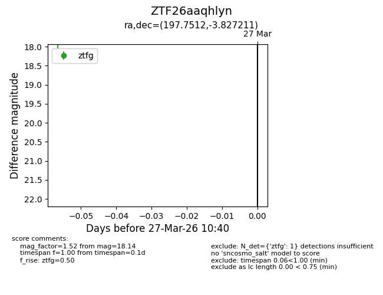
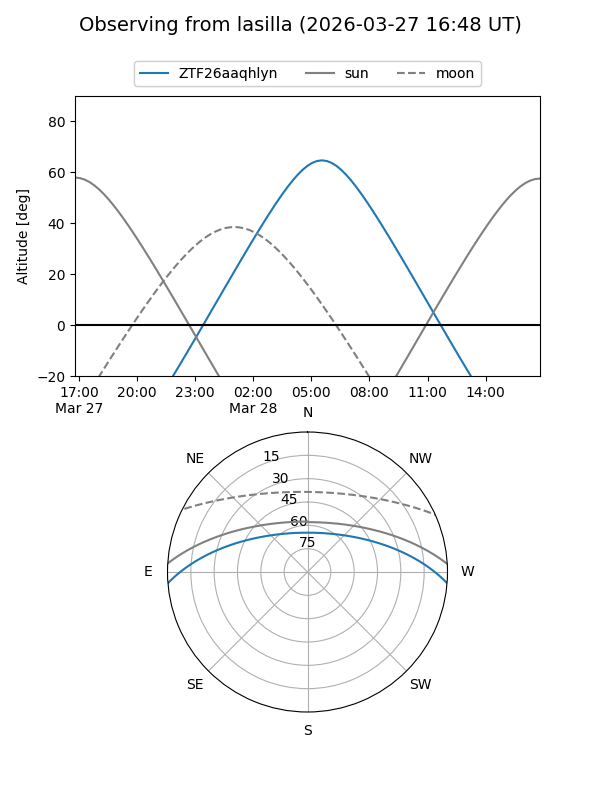
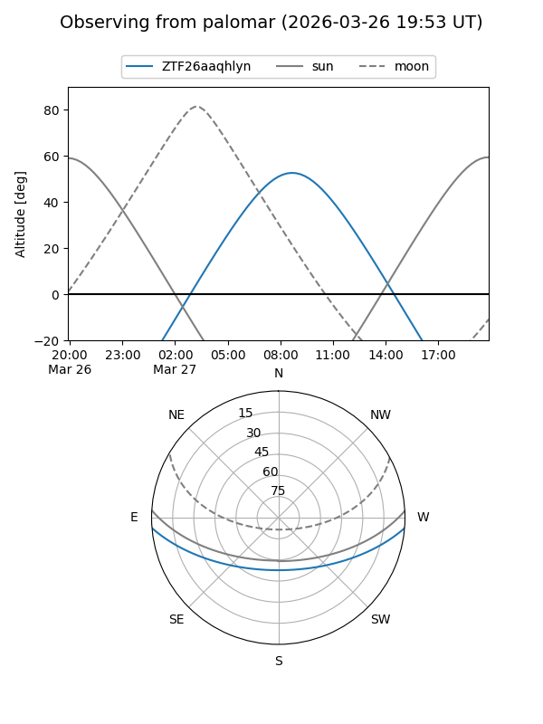

ZTF26aaqhlyn
Target ZTF26aaqhlyn at 2026-03-27 10:43
Aliases and brokers:
FINK: link
Lasair: link
ALeRCE: link
alt names
ZTF26aaqhlyn (ztf,fink_ztf)
Coordinates:
equatorial (ra, dec) = 197.7512,-3.82721
equatorial (HMS+DMS) = 13:11:00.29,-03:49:37.96
galactic (l, b) = (312.3540,+58.68612)
Flags:
Photometry:
last ztfg=18.14
1 ztfg detections
Lightcurve

Visibility


Additional plots